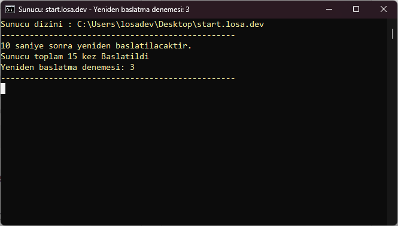
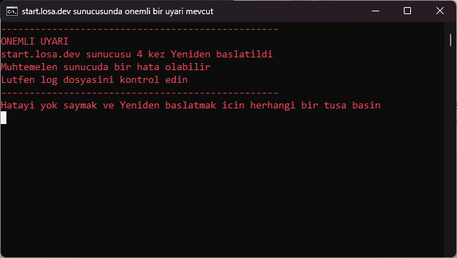

Artık sunucu yönetmek daha kolay!
Bu başlatıcı sayesinde optimizasyonların ve yönetilebilirliğin rahatlığını yaşayın!
İndirmeyi Başlat
ücretsiz ve güvenilir 💖

Bilgi Sistemi
Sistem ve Minecraft sunucusu hakkında bilgi verir.

Otomatik Yeniden Başlatma
Sunucu kapandığında otomatik olarak yeniden başlatılır.

Crash Koruması
Sunucu 4 kere yeniden başlatıldığında ve bir tuşa basmadığınız takdirde sunucu açılmaz.
Optimizasyonu nasıl sağlıyorsunuz?
Optimizasyonu, papermc.io ve bir kaç github tarzında ki kaynaklardan alıntılayarak ve test ederek optimizasyonu sağlıyoruz. Bu sayede sunucu performansı ve sunucu açılış hızı bazen artabiliyor.
Güvenilir mi?
Başlatıcı dosyamız tamamen güvenilirdir. Biraz batch kodlaması biliyorsanız, güvenilir olduğunu ve performansı artıran kodların gerçektende işe yaradığını anlayabilirsiniz.
Başlamaya hazır mısın?
İndir ve rahatlığın tadını çıkart!
İndirmeyi Başlat
ücretsiz ve güvenilir 💖